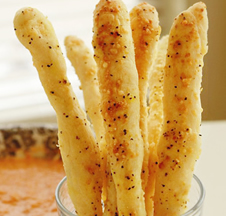

Let's Have a Party!
Pat's has a large party room complete with games for everyone! From ski ball to darts to a ball pit, there's a little something for everyone. The private party room can be booked for 1-3 hours for up to 50 guests. Reservation are required. Choose one of the following packages. Each package includes one large dessert pizza cut into squares--your choice of cherry jubilee, cinnamon frenzy, or chocolate chipper.
